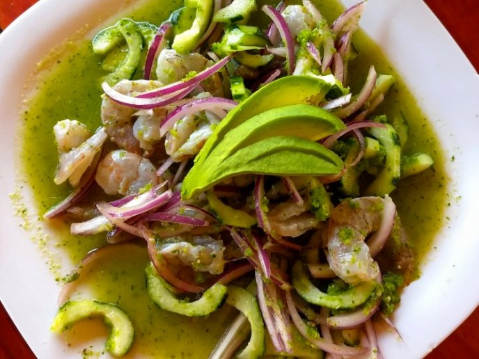

It's a flavorful Mexican appetizer, similar to ceviche, where shrimp is marinated in a lime juice,
but with the addition of chiles and cilantro. A simple and delicious appetizer that is low-carb and keto friendly.
Literally translated as “chile water,” aguachile is usually made with raw shrimp but could be made with white-fleshed fish,
and it’s cured in a gentle acid bath like Peruvian ceviche.
But the acidity is toned back in favor of commanding green-chile heat, and salted vegetables like cucumbers and onions contribute a potent
yet watery broth of sorts for the shrimp to bathe in.